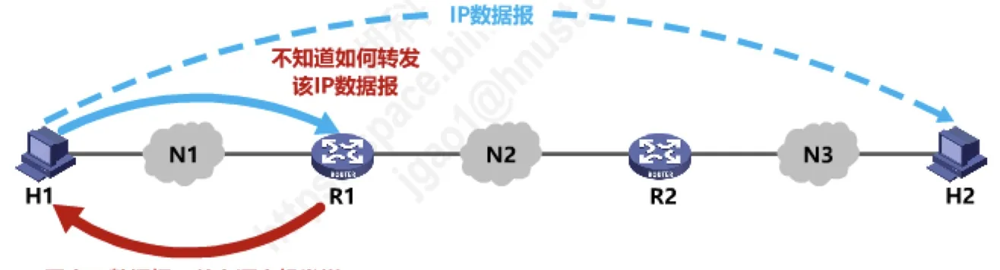
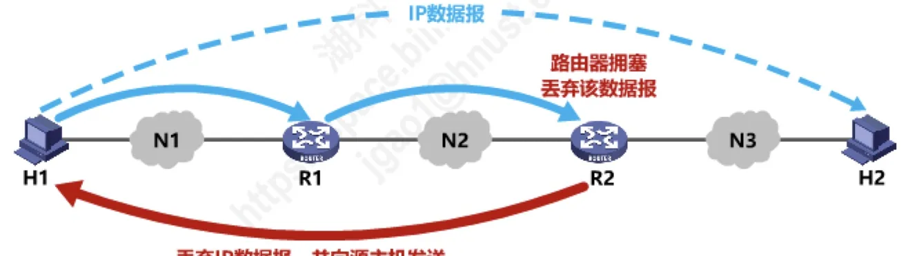
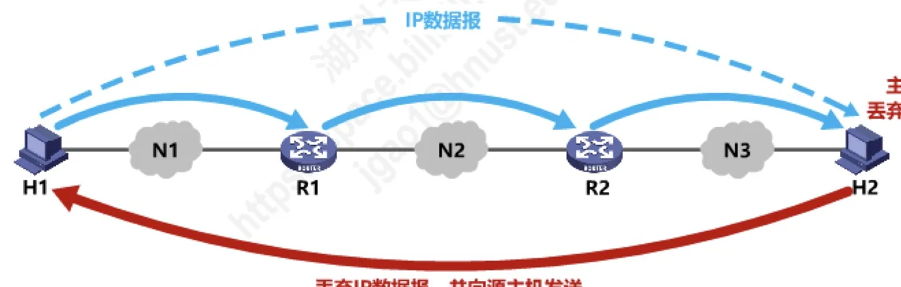
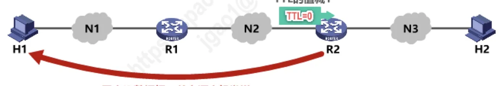
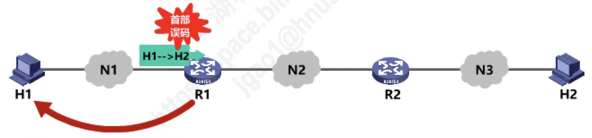
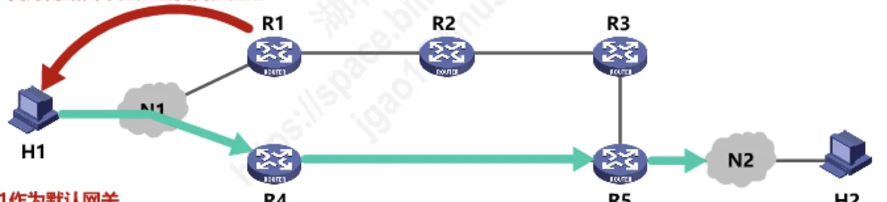
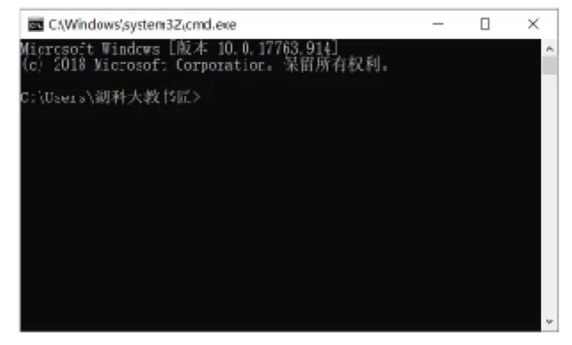
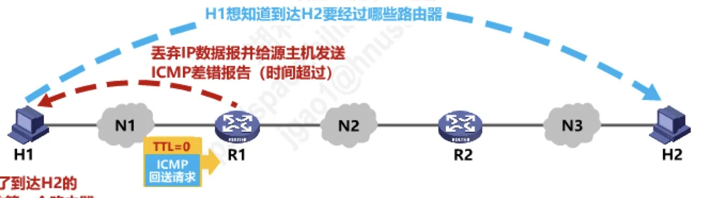
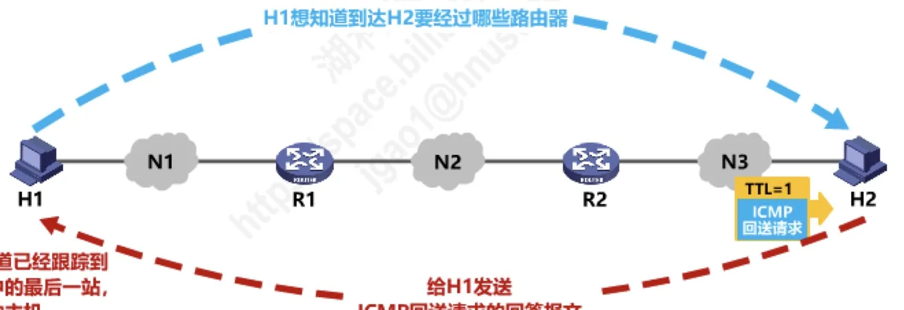

计算机通信与网络 · 第 4 章 网络层
4.8 网际控制报文协议ICMP
IP 协议只提供「尽力而为」的服务：数据报发出去以后，路上出了什么问题，IP 本身并不向源主机汇报。为了让源点知道自己发出的数据报遭遇了什么差错，也为了能主动探测网络的状态，网际层引入了网际控制报文协议 ICMP。本节先看它的作用与封装方式，再逐一梳理五种差错报告报文、不发送差错报告报文的几种情况、两种询问报文，最后落到 PING 与 traceroute 这两个最常用的应用上。
1. ICMP 的作用与封装位置
引入 ICMP 的动机很直接：为了更有效地转发 IP 数据报和提高交付成功的机会，在网际层使用了网际控制报文协议 ICMP（Internet Control Message Protocol，网际控制报文协议）。它不传送用户数据，专门用来传递「网络出了什么状况」这类控制信息。
具体来说，主机或路由器使用 ICMP 来发送两类报文：差错报告报文和询问报文。差错报告报文是网络主动把转发过程中的差错告诉源点，询问报文则是源点主动去问某个主机或路由器的状态。本节的重点是前一类。
ICMP 报文并不单独成帧，而是被封装在 IP 数据报中发送：整条 ICMP 报文作为 IP 数据报的数据部分，前面再加上 IP 首部。这也说明，ICMP 虽然要借助 IP 才能传输，它本身仍然是网际层的协议，而不是运输层协议——后面讲 PING 时我们还会回到这一点。
2. 五种 ICMP 差错报告报文
ICMP 差错报告报文共有以下五种：终点不可达、源点抑制、时间超过、参数问题、改变路由（重定向）。它们各自对应转发过程中的一类典型故障，而且有一个共同点：都是发给源点的——因为真正有机会改变发送行为的，只有源主机。
（1）终点不可达
当路由器或主机不能交付数据报时，就向源点发送终点不可达报文。图 1 画的是最典型的情形：主机 H1 发往 H2 的 IP 数据报到达路由器 R1 后，R1 不知道该如何转发，只好丢弃该 IP 数据报，并向源主机发送 ICMP 差错报告报文（终点不可达）。
要注意，终点不可达不是「一种」差错，而是一类差错的总称。具体是哪一种，还要再根据 ICMP 报文的代码字段细分，包括目的网络不可达、目的主机不可达、目的协议不可达、目的端口不可达、目的网络未知、目的主机未知等共 13 种错误。粒度能细到协议和端口，这对排查问题很有帮助。

（2）源点抑制
当路由器或主机由于拥塞而丢弃数据报时，就向源点发送源点抑制报文，使源点知道应当把数据报的发送速率放慢。也就是说，源点抑制实际上是一种网际层的拥塞控制手段：不必等数据报走到终点，只要中途因为拥塞丢了包，就立刻提醒源主机降速。
拥塞既可能发生在路由器，也可能发生在目的主机，两种情况都会触发源点抑制报文，图 2 与图 3 分别对应这两种情形。


注记：源点抑制这个方法后来被证明效果有限——让源点降速未必能真正缓解途中的拥塞。2012 年发布的 RFC 6633 已将该报文类型废止，拥塞控制主要交给运输层的 TCP 机制去做（可参见 5.5 节）。这里仍保留这一类型，是为了与教材体系和历年真题保持一致。
（3）时间超过
时间超过报文对应的是 IP 数据报首部中的生存时间 TTL（Time To Live）字段，这个字段在 4.7 节讲首部格式时已经出现过。规则是：当路由器收到一个目的 IP 地址不是自己的 IP 数据报，会将其生存时间 TTL 字段的值减 1；若结果不为 0，则将该 IP 数据报转发出去；若结果为 0，除丢弃该 IP 数据报外，还要向源点发送时间超过报文。
图 4 演示的就是这个过程：H1 发出的数据报 TTL 初值为 2，经过 R1 时减为 1 后继续转发，到达 R2 再减为 0，R2 于是丢弃该数据报，并向源主机 H1 发送 ICMP 差错报告报文（时间超过）。TTL 机制的本意是防止数据报在网络中兜圈子，时间超过报文则把「兜圈子被丢弃」这件事明确告诉了源点。

时间超过还有第二种成因：当终点在预先规定的时间内不能收到一个数据报的全部数据报片时，就把已收到的数据报片都丢弃，也会向源点发送时间超过报文。分片与重组的内容在 4.7 节已经讲过，这里只强调一点——超时不只指 TTL 减到 0，分片迟迟凑不齐同样要报时间超过。
（4）参数问题
当路由器或目的主机收到 IP 数据报后，根据其首部中的检验和字段发现首部在传输过程中出现了误码，就丢弃该数据报，并向源点发送参数问题报文。图 5 画的正是这种情形：H1 发往 H2 的数据报首部在途中出了误码，被路由器检测出来后丢弃该数据报，并向源主机发送 ICMP 差错报告报文（参数问题）。
这里有两处容易混淆。一是校验的对象只是首部，IP 首部检验和并不保护数据部分；二是发现问题的既可能是路由器，也可能是目的主机——只有到得了终点、但首部有问题的数据报，才会由目的主机来报错。

（5）改变路由（重定向）
路由器把改变路由报文发送给主机，让主机知道下次应将数据报发送给另外的路由器（可通过更好路由）。图 6 中，主机 H1 把 R1 指定为默认网关，发往 N2 的数据报都先交给 R1；而 R1 发现到达 N2 走 R4 更合适，于是就向 H1 发送 ICMP 差错报告（改变路由），H1 之后再把发往 N2 的数据报交给 R4。
改变路由是这五种报文里最特殊的一个：它报告的不是「出了差错」，而是一条路由优化建议，作用对象也只限于主机。

3. 什么情况下不发送 ICMP 差错报告报文
差错报告报文本身也是一种 IP 数据报。如果它再引出新的差错报告，就可能形成报文风暴；如果一份数据报被切成了很多分片，逐片报错同样会白白加重网络负担。因此以下情况都不应发送 ICMP 差错报告报文：
- 对 ICMP 差错报告报文不再发送 ICMP 差错报告报文（否则差错报文会自己引出差错报文）；
- 对第一个分片的数据报片的所有后续数据报片都不发送 ICMP 差错报告报文（一份数据报的问题只报一次）；
- 对具有多播地址的数据报都不发送 ICMP 差错报告报文（多播的接收者可能很多，都来回送差错报文会把网络压垮）；
- 对具有特殊地址（如 127.0.0.0 或 0.0.0.0）的数据报不发送 ICMP 差错报告报文（这类地址不能作为正常的源或目的地址出现在网络上）。
4. 真题解析
【2010 年题 36】若路由器 R 因为拥塞丢弃 IP 分组，则此时 R 可向发出该 IP 分组的源主机发送的 ICMP 报文类型是（ ）。
A. 路由重定向 B. 目的不可达 C. 源点抑制 D. 超时
答案是 C。题目给出的唯一条件是「因为拥塞丢弃 IP 分组」，而源点抑制报文的定义恰好就是：路由器或主机由于拥塞而丢弃数据报时，向源点发送该报文，使源点把发送速率放慢。其余三项都对不上——目的不可达对应的是送不到终点，时间超过对应 TTL 减到 0 或分片超时，路由重定向对应的是「可通过更好路由」，与拥塞无关。
5. 两种常用的 ICMP 询问报文
差错报告报文是网络主动告诉你出了什么事，询问报文则是你主动去问网络。常用的 ICMP 询问报文有以下两种：回送请求和回答、时间戳请求和回答。
（1）回送请求和回答
ICMP 回送请求报文是由主机或路由器向一个特定的目的主机发出的询问。收到此报文的主机必须给源主机或路由器发送 ICMP 回送回答报文。这一问一答就完成了一次可达性探测：源点收到了回答，就说明目的站可达，同时还能从应答中了解其有关状态。回送请求与回送回答总是成对出现的，下面的 PING 用的正是这对报文。
（2）时间戳请求和回答
ICMP 时间戳请求报文是请某个主机或路由器回答当前的日期和时间。在 ICMP 时间戳回答报文中有一个 32 位的字段，其中写入的整数代表从 1900 年 1 月 1 日起到当前时刻一共有多少秒。这种询问报文用来进行时钟同步和测量时间。
把两种询问放在一起看：回送请求回答解决的是「通不通」，时间戳请求回答解决的是「时间差多少」。两者都不携带用户数据，是典型的网际层探测工具。
6. ICMP 的两个典型应用
（1）分组网间探测 PING
分组网间探测 PING（Packet InterNet Groper）用来测试主机或路由器间的连通性。它的实现方式很有代表性：应用层直接使用网际层 ICMP，没有通过运输层的 TCP 或 UDP，也就是说 PING 不建立任何连接，只是把 ICMP 回送请求报文直接交给 IP 发出去；使用的报文就是前面讲过的 ICMP 回送请求和回答。图 7 是 Windows 命令提示符下执行 ping 命令探测 www.hnust.cn 的实际输出。

（2）跟踪路由 traceroute
跟踪路由 traceroute 用来测试 IP 数据报从源主机到达目的主机要经过哪些路由器。同一个功能在两种系统上的实现并不相同，这一点常被考到：
- Windows 版本：命令是 tracert；应用层直接使用网际层 ICMP；使用了 ICMP 回送请求和回答报文以及差错报告报文。
- Unix 版本：命令是 traceroute；它在运输层使用 UDP 协议；仅使用 ICMP 差错报告报文。
tracert 的工作原理并不复杂，核心就是把 TTL 逐跳抬高，再用回送请求去「试」出每一站。设 H1 想知道到达 H2 要经过哪些路由器：
- 先发一个 TTL = 1 的 ICMP 回送请求报文（图 8）。数据报到达第一个路由器 R1 后 TTL 减为 0，R1 丢弃该数据报，并给源主机发送 ICMP 差错报告（时间超过）。H1 由此知道了到达 H2 路径中的第一个路由器。
- 再发一个 TTL = 2 的 ICMP 回送请求报文。报文在 R1 处减为 1 继续前进，到第二个路由器 R2 处减为 0 被丢弃，R2 同样回送一个时间超过报文。H1 由此知道了路径中的第二个路由器。
- 依此类推，每轮把 TTL 加 1，就能再问出路径上的下一站。
- 当 TTL 足够大时，回送请求报文终于到达目的主机 H2，H2 给 H1 发送 ICMP 回送请求的回答报文（图 9）。H1 一收到回答报文就明白：已经跟踪到路径中的最后一站，即目的主机。


把 PING 与 tracert 放在一起看：两者都借助 ICMP，但 PING 只用回送请求和回答，测的是「通不通、快不快」；tracert 还要用上差错报告报文，测的是「走哪条路」。本节开头的五种差错报告报文，正是在这类工具里被真正用起来的。下一节 4.9 将转向虚拟专用网 VPN 与网络地址转换 NAT，看网际层如何应对地址紧缺与私有网络互连的问题。
本节小结
- ICMP 位于网际层，它的报文被封装在 IP 数据报中发送，主机或路由器用它发送差错报告报文和询问报文，目的是更有效地转发 IP 数据报、提高交付成功的机会；
- 五种差错报告报文：终点不可达（按代码字段细分为 13 种错误）、源点抑制（因拥塞丢弃数据报时通知源点降速）、时间超过（TTL 减到 0，或数据报片未能按时收齐）、参数问题（首部出现误码）、改变路由（重定向，告知主机可通过更好路由）；
- 四种情况不发差错报告报文：对 ICMP 差错报告报文、对第一个分片之后的所有后续数据报片、对多播地址的数据报、对特殊地址（如 127.0.0.0 或 0.0.0.0）的数据报；
- 两种询问报文：回送请求和回答（收到请求的主机必须回答，用来测试目的站是否可达）、时间戳请求和回答（32 位字段记录自 1900 年 1 月 1 日起的秒数，用于时钟同步和测量时间）；
- 两个应用：PING 直接用 ICMP 回送请求和回答测试连通性，虽是应用层程序却不经过 TCP/UDP；traceroute 用 TTL 逐跳递增的回送请求配合时间超过报文逐站测出路径，Windows 的 tracert 直接用 ICMP，Unix 的 traceroute 则在运输层使用 UDP 且仅用差错报告报文。